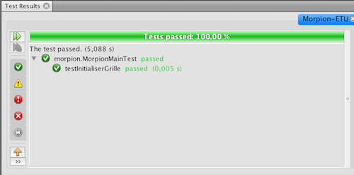
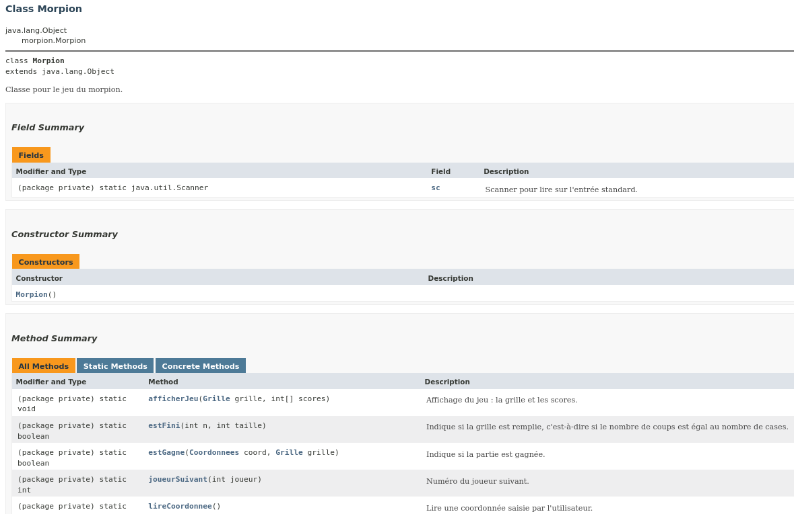
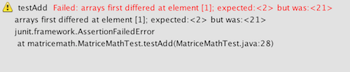

TP matrice - Tests unitaires
Mise en oeuvre avec le jeu du morpion
Lors cette séance vous allez découvrir l'importance et l'intérêt de faire des tests unitaires. Pour cela, vous allez devoir débugger un code Java permettant de jouer au Morpion.
Principe des tests unitaires
L'interface de tests
Nous allons commencer par prendre en main l'interface permettant de réaliser des tests. En premier lieu, récupérer ce projet Morpion.
Ce projet contient tout le code permettant de jouer au morpion. Nous utilisons ici une variante du morpion, avec score. En toute logique il devrait fonctionner de la sorte :
- Chaque joueur pose à tour de rôle son pion.
- Le programme vérifie que le pion est posé sur une case libre et qui existe.
- Le vainqueur est annoncé quand 3 pions sont alignés.
- Le match nul est annoncé si la grille est remplie sans que 3 pions soient alignés.
- En parallèle, chaque joueur dispose d'un score (ce n'est pas le cas du morpion "classique").
Lorsqu'un joueur joue un coup sur une case, son score augmente de :
1 + (le nombre de case voisines lui appartenant) - (le nombre de cases voisines appartenant à son adversaire)
Le score de son adversaire ne change pas. Le terme case voisine désigne toutes les cases jouxtant la case jouée, soit par l'un de ses côtés, soit par l'une de ses diagonales. Cela fait donc 3 cases voisines pour l'un des 4 coins du plateau, 8 cases voisines pour une case loin de tout bord, etc. - À la fin de la partie, le gagnant (= celui qui a aligné 3 pions) marque le nombre de points de son score, et l'adversaire ne marque pas de point.
Question 1
Compilez le code du morpion et testez-le. Vous observerez que le calcul des scores est buggé.
Votre premier réflexe est j'imagine d'aller chercher les bugs et de les corriger. C'est un bon reflexe, mais ça ne se fait pas n'importe comment ! Ca s'anticipe !
Les tests unitaires
Présentation
De manière générale, les tests servent à détecter des bugs, c'est-à-dire des différences entre ce qu'on attend de votre programme, et ce qu'il fait réellement. Par exemple l'appel somme(2,3) devrait renvoyer 5 mais renvoie 4. Tout développeur produit des bugs. L'important c'est d'en faire peu, et surtout de les détecter tôt. En effet, plus ils sont détectés tôt, plus ils sont faciles à trouver et corriger, et accessoirement moins ils coûtent cher aux entreprises. Plusieurs pratiques se développent dans ce sens, et plus généralement pour améliorer la qualité logicielle :
- mieux définir ce qui doit être développé (qualité des spécifications, meilleure communication avec le client via les méthodes agiles, etc).
- pair programming (coder à deux)
- revue de code (pour les curieux, exemple chez OpenBSD : paragraphe Audit Process)
- validation (prouver formellement des programmes, abordé en Licence Pro DAGPI)
- tests
Il existe plusieurs types de tests : unitaires, fonctionnels, d'intégration, etc. Pour l'instant on ne s'intéresse qu'aux tests unitaires, c'est-à-dire des tests qui portent sur des petites portions de code, typiquement une fonction. Un test unitaire consiste alors à lancer la fonction sur plusieurs valeurs, et comparer chaque résultat avec la valeur souhaitée. Le test possède une bonne couverture s'il teste beaucoup de valeurs, et surtout différents cas de figure, les cas critiques, etc. Par exemple pour la fonction somme, on peut tester:
- somme(2,3) == 5 la somme de deux entiers positifs
- somme(2,0) == 2 la somme d'un positif avec zéro
- somme(0,3) == 3 la somme de zéro avec un entier positif
- somme(0,0) == 0 la somme de zéro avec lui-même
- somme(1,-1) == 0 la somme d'un positif et d'un négatif
- somme(-1,-1) == -2 la somme de deux négatifs
- somme(-1,0) == -1 la somme d'un négatif avec zéro
Une fois ces tests rédigés (on verra comment ci-dessous), ils constituent une partie de votre programme, et peuvent être relancés à tout moment. Par exemple les serveurs d'intégration continue permettent de relancer automatiquement tous les tests unitaires à chaque modification de votre programme (abordé au S4).
Quand faut-il écrire les tests unitaires ? À vous de voir, les pratiques divergent selon les organisations. Un premier réflexe est de les écrire après que la fonction soit codée. On peut aussi les écrire avant, en laissant au début la fonction vide (exemple : somme() renvoie toujours zéro). Les tests seront faux au début, puis vrais petit à petit quand vous coderez. L'intérêt est de réfléchir à tous les cas limites avant de coder, et de ne pas écrire les tests sous l'influence de son code.
Morpion
JUnit
Un module très utilisé en Java pour faire des tests unitaires est JUnit.
Dans le projet Morpion, la classe Coordonnees permet de stocker les coordonnées (ligne, colonne) d'une case. Nous allons créer une classe CoordonneesTest contenant les tests unitaires des fonctions de la classe Coordonnees.
Dans chaque projet NetBeans (dans l'arborescence de gauche) apparaît :
- Source Packages : emplacement du code source
- Test Packages : emplacement des tests unitaires.
@Test
public void testEstDansPlateau() {
assertTrue(new Coordonnees(0, 0).estDansPlateau(14));
assertTrue(new Coordonnees(13, 13).estDansPlateau(14));
assertTrue(new Coordonnees(0, 1).estDansPlateau(14));
assertFalse(new Coordonnees(-1, 1).estDansPlateau(14));
assertTrue(new Coordonnees(7, 13).estDansPlateau(14));
assertFalse(new Coordonnees(7, 14).estDansPlateau(14));
assertTrue(new Coordonnees(13, 0).estDansPlateau(14));
assertFalse(new Coordonnees(14, 0).estDansPlateau(14));
assertTrue(new Coordonnees(7, 0).estDansPlateau(14));
assertFalse(new Coordonnees(7, -1).estDansPlateau(14));
assertTrue(new Coordonnees(0, 1).estDansPlateau(2));
assertFalse(new Coordonnees(0, 1).estDansPlateau(1));
}
Pour que ce code compile, se placer sur les lignes en rouge, faire Alt+Entrée, et choisir les imports des méthodes de org.junit....
Ce test contient du code qui, pour chaque ligne :- déclare de nouvelles coordonnées
(par exemple
new Coordonnees(0, 0)
), - effectue l'appel à la fonction
estDansPlateau()
, - vérifie que celle-ci renvoie true si les coordonnées dans le plateau, et faux sinon.
Ainsi, l'instruction
assertTrue(new Coordonnees(0, 0).estDansPlateau(14))
s'assure que, d'après estDansPlateau, les coordonnées (0,0) sont bien sur un plateau de taille 14x14. Si ce n'est pas le cas alors un message d'erreur sera affiché.
Concernant JUnit :
- l'annotation @Test permet à JUnit d'identifier les fonctions qui sont des tests unitaires. Remarque : si une annotation @Test ne compile pas, importez la bibliothèque JUnit comme suggéré par NetBeans. Les fonctions de test doivent être déclarées public void et ne pas prendre de paramètre.
- la méthode assertEquals(valeurAttendue, valeurCalculee) s'assure que valeurCalculee vaut bien le résultat attendu, c'est-à-dire valeurAttendue.
- la méthode assertTrue(monTest) s'assure que le booléen monTest est vrai.
- symétriquement, la méthode assertFalse(monTest) s'assure que le booléen monTest est faux.
Il y a plusieurs façons de lancer les tests unitaires, selon ce que l'on veut faire :
| lancer tous les tests d'une classe | clic droit sur le fichier (à gauche), puis "Test File" ("Tester le fichier") |
| idem, mais en mode debug | clic droit sur le fichier (à gauche), puis "Debug Test File" ("Déboguer en testant fichier") |
| lancer un test unitaire (une méthode) | clic droit sur le nom de la méthode, puis "Run Focused Test Method" |
| idem, en mode debug | clic droit sur le nom de la méthode, puis "Debug Focused Test Method" |
Lorsque vous exécutez ces tests, une fenêtre s'ouvre et vous indique les tests réussis et ceux qui ont échoué. Par exemple dans notre cas voici ce que vous indique JUnit selon qu'un assert ait détecté une erreur ou pas.


 Lorsqu'on débogue un test unitaire
(une seule méthode, via "Debug focused test method"),
il arrive que le test ne se lance pas, et
que le message suivant apparaisse :
Target method "debug-single-method" does not exist in the project....
Dans ce cas, il faut éditer le fichier
nbproject/build-impl.xml (depuis le répertoire du projet),
dupliquer la ligne contenant "debug-test-method" et changer cette chaîne par "debug-single-method" dans la ligne copiée.
Lorsqu'on débogue un test unitaire
(une seule méthode, via "Debug focused test method"),
il arrive que le test ne se lance pas, et
que le message suivant apparaisse :
Target method "debug-single-method" does not exist in the project....
Dans ce cas, il faut éditer le fichier
nbproject/build-impl.xml (depuis le répertoire du projet),
dupliquer la ligne contenant "debug-test-method" et changer cette chaîne par "debug-single-method" dans la ligne copiée.
Question 2
Corrigez le code de la fonction estDansPlateau() pour qu'elle passe les tests.
Question 3
La méthode Coordonnees suivante(Direction d) de la classe Coordonnees permet d'obtenir les coordonnées de la case atteinte lorsqu'on part de la case courante (this) et que l'on applique la direction d passée en paramètre.
Par exemple :
Coordonnees avant = new Coordonnees(3, 3); Coordonnees apres = avant.suivante(Direction.EST); System.out.println(apres); // affiche (3, 4)
Recopiez le code du test de la fonction suivante() dans CoordonneesTest et exécutez le test unitaire. Vous remarquerez qu'il ne passe pas.
@Test
public void testSuivante() {
assertEquals(new Coordonnees(5, 4),
new Coordonnees(4, 4).suivante(Direction.SUD));
assertEquals(new Coordonnees(2, 2),
new Coordonnees(1, 1).suivante(Direction.NORD_OUEST));
assertEquals(new Coordonnees(-1, -1),
new Coordonnees(0, 0).suivante(Direction.NORD_OUEST));
assertEquals(new Coordonnees(199, 201),
new Coordonnees(200, 200).suivante(Direction.NORD_EST));
}
Dans le cas testé, la fonction suivante() est bonne. C'est le test unitaire qui présente une erreur. Hé oui, un test unitaire reste un code comme un autre. Il peut contenir des erreurs. Identifiez l'erreur commise dans ce test unitaire et corrigez-le.
Énumérations, suite
Nous avons vu dans le TP précédent le principe d'une énumération en Java : une liste fixe de valeurs possibles. Les énumérations peuvent également contenir des méthodes.
Observez, dans le code du Morpion, l'énumération nommée Direction. Certaines méthodes sont des méthodes de classe (comme toutes()), d'autres sont des méthodes d'instance (comme mvtHoriz()).
En fait, en Java, une énumération est une classe un peu spéciale, dont toutes les instances sont déclarées de manière fixe. Ainsi NORD est une instance de l'énumération Direction. De ce fait, on peut également trouver des attributs et des constructeurs dans les énumérations (nous ne les utiliserons pas ce semestre, mais les plus curieux pourront regarder la doc).
Boucle sur les éléments d'un tableau
Jusqu'ici pour parcourir les éléments d'un tableau de taille n, nous faisions varier un indice de 0 à n-1. Rappellons que la taille du tableau t est accessible via son attribut t.length.
Il existe en Java un moyen de parcourir les éléments d'un tableau, de sa première à sa dernière case, sans passer par les indices :
int[] tab = {5, -4, 3};
int somme = 0;
for (int val : tab) {
somme += val;
}
Ici, la variable val, de type int,
va prendre chaque valeur du tableau tab, successivement.
Ainsi, le code suivant affiche toutes les directions :
for (Direction d : Direction.toutes()) {
System.out.println(d);
}
Question 4
Codez la méthode voisines() de la classe Coordonnees. Cette méthode prend en paramètre la taille de la grille (toujours supposée carrée), et renvoie un tableau contenant les coordonnées de ses cases voisines.
L'instruction Arrays.copyOf(voisines, nbVoisines) permet ici de renvoyer une copie du tableau voisines ne contenant que ses nbVoisines premières cases.
Codez des tests unitaires pour la méthode voisines(), dans CoordonneesTest. Vous testerez notamment que :
- une case dans un coin ne possède que 3 voisines,
- une case sur un bord mais loin d'un coin possède 5 voisines,
- une case loin des bords possède 8 voisines.
Question 5
Dans la classe Grille, codez la méthode nbVoisinsAppartenantAuJoueur(). Référez-vous à sa documentation pour en comprendre la définition. Vous pourrez utiliser la méthode contenuCase() pour accéder au contenu d'une case à partir de ses coordonnées.
Dans Test Packages, créez la classe GrilleTest dans morpion et ajoutez-y la méthode ci-dessous. Vérifiez que ces tests passent.
@Test
public void testNbVoisinsAppartenantAuJoueur() {
int[][] contenu = {{2, 1, 1}, {2, 0, 0}, {2, 0, 0}};
Grille grille = new Grille(3);
grille.changerContenuGrille(contenu);
assertEquals(2, grille.nbVoisinsAppartenantAuJoueur(1, new Coordonnees(1, 1)));
assertEquals(3, grille.nbVoisinsAppartenantAuJoueur(2, new Coordonnees(1, 1)));
assertEquals(0, grille.nbVoisinsAppartenantAuJoueur(1, new Coordonnees(2, 2)));
assertEquals(1, grille.nbVoisinsAppartenantAuJoueur(2, new Coordonnees(0, 0)));
}
Une fois les tests passés, réalisez plusieurs parties et vérifiez que tout est conforme à la vidéo du début de l'exercice.
Question 6
Lorsque l'on programme, il est important de commenter son code. Nous l'avons vu, Java propose un format appelé javadoc qui permet de générer une documentation (quasi) automatiquement.
Générer le site de documentation
Par défaut NetBeans ne génère la documentation que pour les attributs et méthodes public. Pour générer la documentation pour tous les attributs et méthodes :
- faîtes un clic droit sur votre projet Morpion-ETU et allez dans Properties / Build / Documenting,
- cochez "Include Private and Package Private Members" et validez,
- en cliquant droit à nouveau sur le projet puis sur "Generate Javadoc" un site web contenant toute la documentation sera généré automatiquement.

Gestion de la javadoc dans le code
Effectuez le réglage suivant dans NetBeans : menu Tools / Options / Editor / Hints / Javadoc / Create Javadoc (et Error in Javadoc) / passer de protected à private (en français : Outil / Options / Éditeur / Indices / Javadoc / Créer Javadoc (et Error in Javadoc)).
Puis cliquez droit sur votre fichier Grille.java, faîtes Tools / Analyze Javadoc. NetBeans vous propose de sélectionner les fonctions à commenter puis va, en fonction des paramètres de la fonction, ajouter en commentaire des mots clefs qui seront utilisés plus tard par le générateur de documentation (cliquer sur "Fix Selected").
Commentez TOUTES les fonctions du Morpion (en particulier dans la classe Grille), et générez la Javadoc.
Recherche d'une valeur dans un tableau
Nous allons nous intéresser à la recherche d’une valeur dans un tableau d’entiers. Nous prendrons les conventions suivantes :
- si la valeur recherchée est dans le tableau, la fonction de recherche doit retourner l’indice d’une case contenant cette valeur
- sinon, la fonction de recherche retourne -1.
Question 1
Préparez les tests unitaires derechercheLineaire()et
rechercheDichotomique()dans les méthodes
testRechercheLineaire()et
testRechercheDichotomique()
Question 2
Implémentez les méthodesrechercheLineaire()et
rechercheDichotomique()en respectant les signatures données.
Opérations entre matrices (facultatif)
Addition et soustraction de matrices
Pour additionner ou soustraire deux matrices rien de plus simple. Il suffit que les deux matrices aient la même taille et de soustraire/additionner terme à terme les éléments.
Par exemple :
| 5 | 0 | 4 |
| 2 | 3 | 4 |
| 1 | 0 | 1 |
| 2 | 0 | 1 |
| 6 | 0 | 5 |
| 4 | 3 | 5 |
| 5 | 0 | 4 |
| 2 | 3 | 4 |
| 1 | 0 | 1 |
| 2 | 0 | 1 |
| 4 | 0 | 3 |
| 0 | 3 | 3 |
Question 1
Récupérez le code java du projet "matriceMath". Ce projet contient deux fonctions contenant des "bugs".
/**
* Addition de deux matrices de même taille.
*
* @param mat1 la première matrice
* @param mat2 la seconde matrice
* @return la matrice résultat de l'addition des matrices en paramètre
*/
static int[][] add(int[][] mat1, int[][] mat2) {
int[][] matRes = new int[mat1.length][mat1[0].length];
for (int i = 0; i < mat1.length; i++) {
for (int j = 0; j < mat1.length; j++) {
matRes[i][j] = mat1[i][j] + mat2[i][j];
}
}
return matRes;
}
/**
* Soustraction de deux matrices de même taille.
*
* @param mat1 la première matrice
* @param mat2 la seconde matrice
* @return la matrice résultat de la soustraction des matrices en paramètre
*/
static int[][] sub(int[][] mat1, int[][] mat2) {
int[][] matRes = new int[mat1.length][mat1[0].length];
for (int i = 0; i < mat1.length; i++) {
for (int j = 0; j < mat1.length; j++) {
matRes[i][j] = mat1[i][j] - mat1[i][j];
}
}
return matRes;
}
Dans cet exercice on supposera que l'utilisateur est intelligent et qu'il rentrera toujours deux matrices de même taille. Créez les deux tests unitaires nécessaires. Identifiez la ou les erreurs et corrigez-les. Nous vous invitons à utiliser la méthode
assertArrayEquals(,)qui permet de comparer deux tableaux sans avoir à faire soi-même la double boucle. Par exemple
assertArrayEquals(new int[]{1,2,3}, new int[]{1,21,3});
génèrera un affichage dans lequel sera indiqué l'indice du tableau dont les cases diffèrent.

Carré magique (facultatif)
Lors de la création d'un gros projet de développement, il se peut que les tests (unitaires ou autres) soient confiés à une équipe différente de celle qui a codé les fonctions. Cet exercice reproduit ce cas de figure. Une équipe a codé 8 versions d'une fonction permettant de créer un carré magique de dimension 3X3.
Pour rappel, lisez la définition Wikipédia d'un carré magique.
Question 1
Récupérez le projet. Il permet de demander à un service web (a priori buggé) de générer, case par case, les chiffres d'un carré magique 3X3.
Regardez le main() :
public static void main(String[] args) {
int[][] carre = {{-1, -1, -1}, {-1, -1, -1}, {-1, -1, -1}};
for (int i = 0; i < 3; i++) {
for (int j = 0; j < 3; j++) {
carre[i][j] = requeteCarre.getVal(1, 5, i, j);
System.out.print(carre[i][j] + " ");
}
System.out.println(" ");
}
}
Il y a un passage important. C'est celui de l'appel à la fonction que vous n'avez pas codée et que vous devez tester.
requeteCarre.getVal(int version, int valeurInitiale, int ligne, int colonne);L'équipe ayant codé les 8 versions de cette fonction vous donne les indications suivantes :
- version est un entier entre 1 et 8 et correspond à la version de la fonction que vous souhaitez tester
- valeurInitiale est un entier strictement POSITIF et correspond à la valeur placée en ligne 1 colonne 2 du carré magique et permettant de générer n'importe quel carré magique.
- les variables ligne et colonne servent à préciser la case du carré 3X3 que l'on souhaite obtenir.
- la fonction retourne la valeur située en [ligne][colonne]. Elle retourne -1 si version n'est pas entre 1 et 8, -1 si valeurInitiale<=0 , -1 si les variables lignes ou colonnes ne sont pas comprises entre 0 et 2.
| 5 | 0 | 4 |
| 2 | 3 | 4 |
| 2 | 6 | 1 |
| 6 | 1 | 5 |
| 3 | 4 | 5 |
| 3 | 7 | 2 |
int[][] carre = {{-1, -1, -1}, {-1, -1, -1}, {-1, -1, -1}};
carre[0][0] = requeteCarre.getVal(1, 5, 0, 0); // doit retourner 6
carre[0][1] = requeteCarre.getVal(1, 5, 0, 1); // doit retourner 1
carre[0][2] = requeteCarre.getVal(1, 5, 0, 2); // doit retourner 5
carre[1][0] = requeteCarre.getVal(1, 5, 1, 0); // doit retourner 3
...
carre[2][2] = requeteCarre.getVal(1, 5, 2, 2); // doit retourner 2
C'est exactement ce que fait le code que je vous ai donné (avec la double boucle).
Question 2
À vous de coder la fonction
static boolean isMagique(int[][] magique)Cette fonction permet de vérifier qu'une matrice 3X3 est un carré magique (si vous êtes malin, inspirez-vous du code du morpion).
Question 3
Réalisez les tests unitaires de cette fonction.Question 4
Utilisez cette fonction pour réaliser les tests unitaires et découvrir la SEULE fonction valide parmi les 8 qui ont été codées.